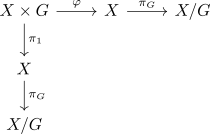

projection to the orbits as open map
Proposition
Let $\triangle: G \times X \rightarrow X$ be a topological group action. Then the projection map
\begin{align*}
\pi: X \rightarrow X/G
\end{align*}
for the orbital collapse is open
Proof
Consider

Let $O \subseteq X$ be open. Then the preimage $\varphi^{-1}[O]$ is open, and since the projection is an open map, $\pi_1[\varphi^{-1}[O]]$ is open. Furthermore, $(\pi_G^{-1} \circ \pi_G \circ \pi_1 \circ \varphi^{-1})[O] = (\pi_1 \circ \varphi^{-1})[O]$, as $\pi_G$ is surjective and $\varphi^{-1}[O]$ maximal with respect to the orbits.